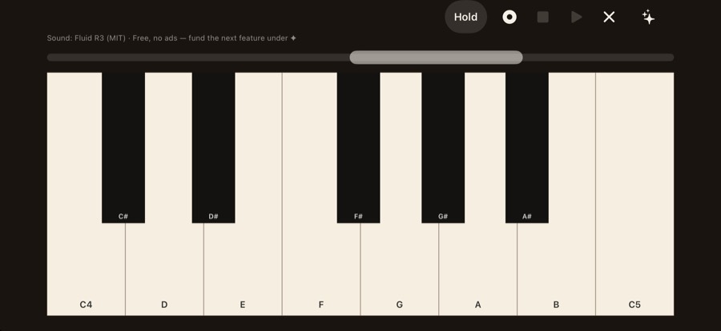

“Pop up ads cover the whole screen whenever I play a note.”
Piano for iPhone on the App Store
What Open Piano does instead
There is no advertising path. Play, record, and listen back without an interruption covering the keys.
Open AppCo app #1
Play a real piano, see every note, and record it without an ad covering the keys.
Apple is reviewing version 1.0.0 (build 9).
The actual app

Why this app exists
“Pop up ads cover the whole screen whenever I play a note.”
Piano for iPhone on the App Store
There is no advertising path. Play, record, and listen back without an interruption covering the keys.
This page uses the manually verified public review excerpt that originally put this app in the Open AppCo queue. New releases publish the wider recorded-feed coverage and every verified complaint category they claim to address.